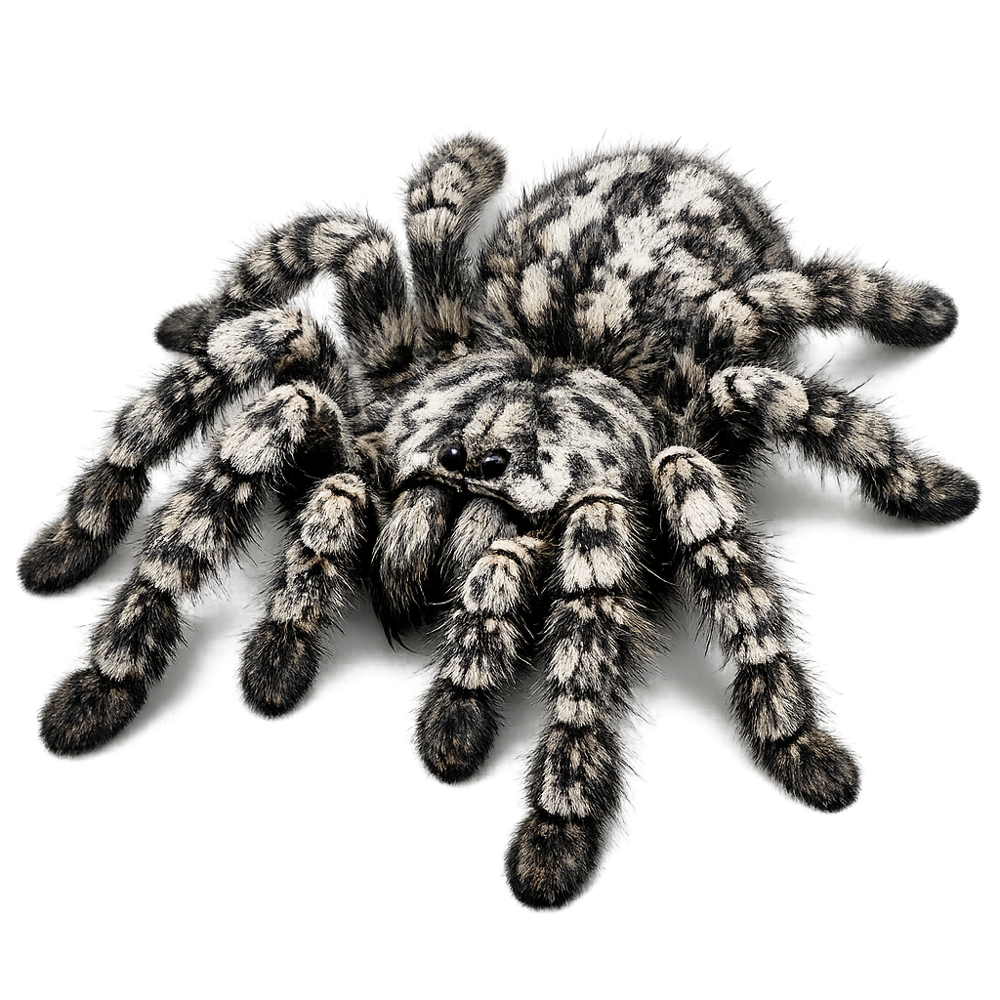

Latinský název: Heteroscodra maculata
Běžný název: Togo Starburst Baboon
Původ: západní Afrika (Ghana, Togo)
Typ: stromový sklípkan (arboreální druh)
Velikost v dospělosti: přibližně 12–15 cm rozpětí nohou
Délka života: samice až 12–15 let, samec přibližně 3–4 roky

Heteroscodra maculata je rychlý a velmi agilní stromový sklípkan pocházející z tropických oblastí západní Afriky. Je známý svým kontrastním šedobílým vzorem na těle a dlouhými štíhlými končetinami. V přírodě obývá dutiny stromů a větve ve vyšších částech lesa, kde si vytváří husté pavučinové úkryty.
Patří mezi tzv. Old World druhy, které nemají obranné chloupky a při ohrožení se spoléhají především na rychlost a případný obranný útok. Kvůli velmi rychlým reakcím a silnějšímu jedu je tento druh doporučen spíše zkušenějším chovatelům.
Terárium: vertikální typ s dostatkem prostoru na šplhání (např. 30×30×45 cm pro dospělce)
Úkryty: korková kůra nebo dutá větev pro vytvoření pavučinového úkrytu
Teplota: přibližně 24–28 °C
Vlhkost: kolem 60–80 %
Substrát: kokosová drť nebo směs terarijní půdy (cca 5–8 cm)
Krmí se běžným živým hmyzem, například cvrčky, šváby nebo sarančaty. Mladí jedinci přijímají potravu častěji, dospělci obvykle jednou za 7–10 dní.
← zpět na nabídku